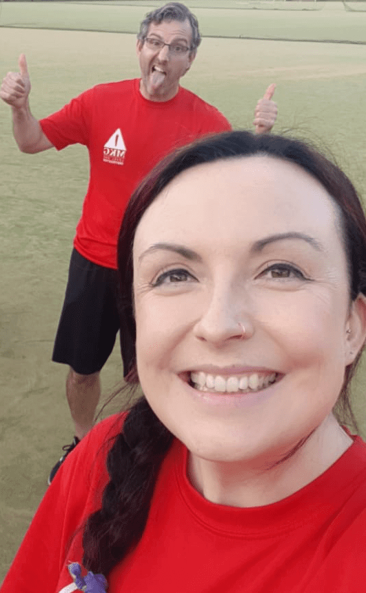

About us
MKG North Dublin is a fun and friendly Martial Arts club dedicated to teaching the best martial arts from around the world to people of all ages and abilities.

Our coaches
James Devine & Courtney Dillon bring a wealth of experience and passion for teaching martial arts.
James has been training martial arts for over 30 years starting with Judo, Ju Jitsu, Kickboxing, Jeet
Kune Do and Kali. James set up Skerries School of Martial Arts over 15 years ago which has now grown
into MKG North Dublin.
Courtney started training Jeet Kune Do, Kali and Kickboxing in 2017. Her passion and dedication has led
her to qualify for the MKG Instructor programme.
A Montessori teacher and childcare professional, Courtney leads the kids program at MKG North Dublin
which has experienced huge growth over the last few years.
Our story
We have operated a martial arts club in Skerries, North Dublin for over 15 years. In 2019 we joined with the international MKG Martial Arts organisation which was set up by Guro Rick Faye (USA) in 1982. Our club is the first Irish club to join the MKG family.
The MKG name comes from Guro Rick Fayes original startup the "Minnesota Kali Group" which has grown over the last thirty years into a global martial arts organisation with clubs located across USA, Europe, UK and now Ireland.
The three main style of arts we teach . . .
Jeet Kune Do
JKD "Way of the Intercepting Fist" A principled based martial arts method developed by the late Bruce Lee which is primarily an empty hand approach to self protection. It focuses is on stopping an attack before the conflict even starts or as it's founder put it " the Art of fighting without fighting".
Kali
A Filipino Martial Art meaning Body/Hand Movement, also called Escrima or Arnis. This is the indigenous art of the Philippines and is most notable for it use of various weapons such as single and double sticks, staff, swords, knives as well as a complete empty hand system referred to as Panatukan or "Dirty Boxing". Kali is not only an effective martial art but it's benefits also include improved cognitive ability.
MKG Kickboxing
This is a blended approach to striking used in all our programs that takes influence from many sources including JKD, Kali and Muay Thai. It improves physical and mental fitness as well as teaching students a foundation of body mechanics and an awarenes of their potential.
We also host seminars bringing high level instructors from the UK, Europe & USA to share their expetise.
Benefits of Martial Arts
Training in martial arts has a wide range of physical and mental benefits. They include increased
fitness, strength, balance, confidence, resilience, persistence, patience, focus, respect, team
building, a growth mindset, these are all skills that transfer to and improve our day to day lives
. . . plus its a lot of fun!!
Check out the excellent TedX Talk below to learn a little more about Kali . .